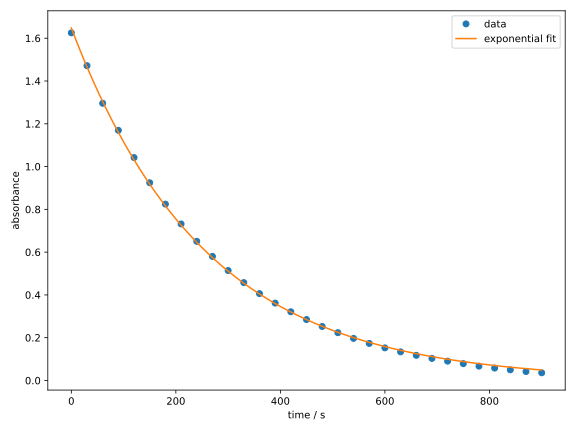
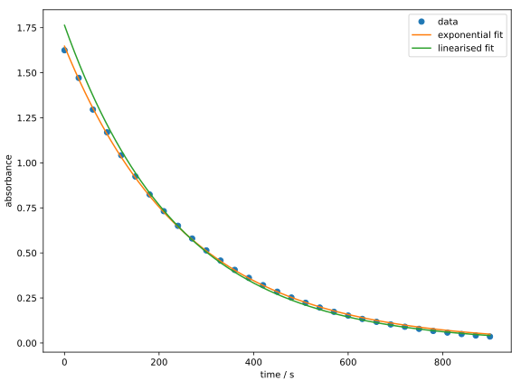
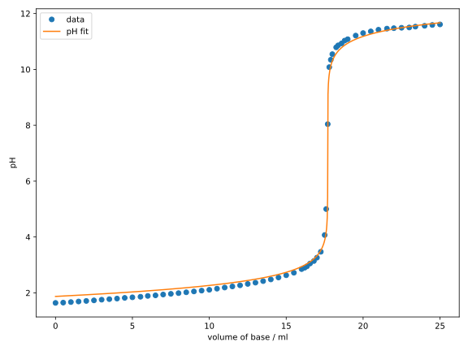
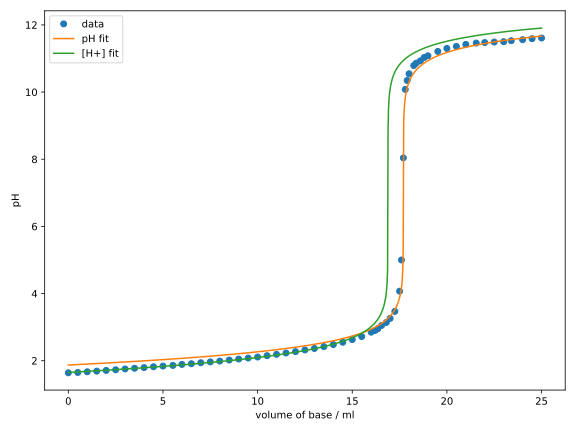

Nichtlineare Regression
Wir haben in den vorherigen Abschnitten die lineare Regression kennengelernt, die uns erlaubt, lineare Zusammenhänge zwischen Variablen zu modellieren. Zwar sind viele physikalische Zusammenhänge linear, oder können als solche formuliert werden, aber es gibt auch viele nichtlineare Zusammenhänge, die wir modellieren wollen. Im Rahmen der Methode der kleinsten Quadrate ersetzen wir dazu einfach das Modell in Gl. (1.4) durch eine nichtlineare Funktion. Allerdings ist in diesem Fall ist eine analytische Lösung wie Gl. (1.9) nicht immer möglich, weshalb numerische Optimierungsverfahren verwendet werden müssen.
Anwendung
Reaktionskinetik
Sie haben im Physikalisch-Chemischen Praktikum sicherlich den Versuch “Bestimmung der Geschwindigkeitskonstante und der Aktivierungsenergie der Mangan(III)-Trioxalat-Zersetzungsreaktion”, auch “Mn-Zerfall” genannt, durchgeführt. Dort haben Sie die Absorbanz in Abhängigkeit der Zeit gemessen und durch fitten der Messdaten die Geschwindigkeitskonstante bestimmt. Die zugrungeliegende Beziehung ist exponentiell: mit dem Parametern und , d.h. .
Hier gilt also und wir können mit Hilfe der Verlustfunktion der kleinsten Quadrate das Regressionsproblem als das folgende Optimierungsproblem formulieren:
Wir importieren als erstes wieder die benötigten Module und Bibliotheken:
import numpy as np
import matplotlib.pyplot as plt
from scipy.optimize import minimize
Anschließend müssen wir die Daten in Form von Arrays bereitstellen. Weil wir hier
doch relativ viele Datenpunkte haben, wird das manuelle Eintippen
ziemlich mühsam. Deshalb verwenden wir die Funktion
np.loadtxt,
um die Daten aus einer Textdatei zu lesen.
Die Textdatei mn_decay.txt
(hier herunterladen)
enthält zwei Spalten, welche die Werte für Zeit und
Absorbanz enthalten. Die ersten Zeilen der Datei sehen wie folgt aus:
# time / s absorbance
0 1.625020
30 1.471490
60 1.295880
90 1.169340
120 1.042040
150 0.924193
180 0.824484
210 0.731743
240 0.650593
Zum Einlesen der Daten benötigt die Funktion np.loadtxt den Dateinamen:
time, absorbance = np.loadtxt('mn_decay.txt', unpack=True)
In diesem Fall liegt die Textdatei im gleichen Verzeichnis wie das ausführende Skript.
Wenn Sie die Textdatei in einem anderen Verzeichnis haben, müssen Sie den Pfad
entsprechend anpassen. Das optionale Argument unpack=True sorgt dafür, dass die
Spalten der Datei einzeln ausgegeben und als Arrays time und absorbance gespeichert
werden. Würden wir unpack=False setzen, welches auch der Defaultwert ist,
würde die Funktion ein 2D-Array zurückgeben, in dem die Spalten zusammengefasst sind.
Die erste Zeile dieser Datei beginnt mit einem Kommentarzeichen #, was
np.loadtxt dazu veranlasst, diese Zeile zu ignorieren.
Mit dem optionalen Argument comments können wir das Zeichen, welches für Kommentare
verwendet wird, ändern.
Nun können wir das Modell definieren:
def exp_decay(t: np.ndarray, a0: float, k: float) -> np.ndarray:
return a0 * np.exp(-k * t)
Obwohl t ein Array und k ein Skalar ist, funktioniert die Multiplikation
-k * t elementweise. In diesem Fall wird auch k als ein Array interpretiert, was als
Broadcasting
bezeichnet wird. Die Funktion np.exp berechnet den elementweisen Exponential
des Arrays. Das Ergebnis ist demnach wieder ein Array, welches wir mit dem Skalar a0
multiplizieren.
Anschließend definieren wir die Objektivfunktion in Gl. (1.12):
def objective_function(beta, *args):
a0, k = beta
time, absorbance = args
return np.sum((absorbance - exp_decay(time, a0, k))**2)
Wir verwenden nun die minimize-Funktion, um dieses
Optimierungsproblem zu lösen:
beta_guess = (1.0, 0.01)
res = minimize(
objective_function, beta_guess, method='Nelder-Mead',
args=(time, absorbance),
)
a0, k = res.x
print(f'k = {k} s^-1')
print(f'A0 = {a0}')
Hier haben wir das Nelder-Mead-Verfahren mit den Startparametern
und angewandt. Zum Ausgeben des Ergebnisses mit dem
print-Befehl haben wir vor der Zeichenkette jeweils ein f gesetzt.
Das signalisiert, dass die Zeichenkette ein sog.
f-string
ist, in welchen wir Variablen mit geschweiften Klammern {} einbetten können.
Tatsächlich können f-Strings noch einiges mehr, was wir in Zukunft
noch sehen werden.
Die optimierten Parameter sollten die folgenden Werte haben:
assert np.isclose(k, 0.0039022970)
assert np.isclose(a0, 1.6475263)
Zum Schluss können wir die Ergebnisse plotten:
fig, ax = plt.subplots(figsize=(8, 6))
time_interp = np.linspace(time.min(), time.max(), 1000)
ax.plot(time, absorbance, 'o', label='data')
ax.plot(time_interp, exp_decay(time_interp, a0, k), label='exponential fit')
ax.set_xlabel('time / s')
ax.set_ylabel('absorbance')
ax.legend()
fig.tight_layout()
plt.show()
Sie sollten die meisten Funktionen im obigen Codeblock aus
Kap. 1.2 kennen. Ein Unterschied ist die
Verwendung der Funktion
np.linspace,
welche Zeiten zwischen den Messpunkten generiert, sodass wir
das Regressionsmodell für eine Interpolation verwenden können.
Diese Funktion akzeptiert drei Argumente: den Startwert, den Endwert und
die Anzahl der zu generierenden Punkte. Dann produziert sie ein Array
mit gleichmäßig verteilten Werten zwischen dem Start- und Endwert.
Ein weitere neue Funktion ist
fig.tight_layout(), die eine automatische Anpassung des Layouts des Plots
vornimmt. Wir erkennen aus dem folgendem Diagramm, dass die exponentielle Funktion die Daten
sehr gut beschreibt.

Einige von Ihnen würden vielleicht fragen, warum wir nicht die Funktion linearisiert haben, um die lineare Regression zu verwenden, was eine berechtigte Frage ist. Tatsächlich ist es möglich, die Funktion zu linearisieren, indem wir beide Seiten der Gleichung logarithmieren: Eine lineare Regression mittels dieser Gleichung liefert allerdings nicht die gleichen Ergebnisse, wie Sie im folgenden Diagramm sehen können: 
Als freiwillige Übung können Sie versuchen, das obige Diagramm reproduzieren. Es ist unschwer zu erkennen, dass der linearisierte Fit schlechter zu den Daten passt. Das liegt daran, dass die lineare Regression die Fehler in der Absorbanz durch das Logarithmieren nicht gleichmäßig behandelt. Die dadurch erhaltenen Parameter
assert np.isclose(k_lin, 0.0041675912)
assert np.isclose(a0_lin, 1.7633374)
sind durchaus unterschiedlich zu den vorherigen. Deshalb ist es oft notwendig, nichtlineare Regressionen an den urprünglichen Daten durchzuführen, anstatt lineare Modelle mit linearisierten Daten zu verwenden.
Titrationskurve
Im Analytikpraktikum haben Sie sicherlich ebenfalls eine Titration einer starken Base gegen eine starke Säure mit einem pH-Meter durchgeführt. Damals mussten Sie die Werte wahrscheinlich auf einem Millimeterpapier auftragen und anhand der Position des pH-Sprungs den Äquivalenzpunkt bestimmen. Das ist einerseits mühsam und andererseits ungenau, da nur die wenigen Messdaten in der Nähe des steilen Anstiegs berücksichtigt werden.
Da die pH-Kurve eine Funktion in Abhängigkeit der zugegebenen Menge an Base ist, können wir sie mithilfe der nichtlinearen Regression modellieren und den Äquivalenzpunkt mit deutlich höherer Genauigkeit bestimmen.
Die -Konzentration während der Titration einer starken Base gegen eine starke Säure ist (unter gewissen Näherungen) gegeben durch: wobei die Konzentrationsdifferenz zwischen den Gegenionen der Säure und der Base ist. ist das Ionenprodukt des Wassers.
Da starke Säuren und Basen vollständig dissoziieren, lassen sich die Konzentrationen ihrer Gegenionen wie folgt ausdrücken: wobei und die Konzentrationen der zu analysierenden Säure und der zugegebenen Base sind, das Anfangsvolumen der Probelösung und das Volumen der zugegebenen Base ist.
Der pH-Wert lässt sich aus der -Konzentration berechnen:
Fasst man die Gleichungen (1.13) und (1.14) in einer Funktion zusammenfassen, so erhalten wir das Modell , wobei .
Wir implmentieren zunächst das Modell und die Objektivfunktion:
def titration_sasb_model(
v_b: np.ndarray,
c0_b: float,
c0_a: float,
v0: float,
) -> np.ndarray:
k_w = 1e-14
c_a = c0_a * v0 / (v0 + v_b)
c_b = c0_b * v_b / (v0 + v_b)
delta = c_a - c_b
c_h = 0.5 * (delta + np.sqrt(delta**2 + 4 * k_w))
ph = -np.log10(c_h)
return ph
def objective_function(beta, *args):
c0_a, v0 = beta
c0_b, v_b, ph = args
ph_fit = titration_sasb_model(v_b, c0_b, c0_a, v0)
return np.sum((ph - ph_fit)**2)
Obwohl die Funktion des pH-Werts relativ kompliziert ist, können wir durch die Definition von Zwischenvariablen, wie in Gl. (1.13), die Implementierung der Funktion in Python deutlich vereinfachen. Die Objektivfunktion ist fast identisch zu der des Mn-Zerfalls, wobei der wesentliche Unterschied die Ersetzung unseres Modells darstellt.
Genau so wie im vorherigen Beispiel lesen wir die Daten aus einer Textdatei (hier herunterladen) ein:
C0_B = 0.1 # mol/l
v_b, ph = np.loadtxt('titration_sasb.txt', unpack=True)
Zusätzlich haben wir hier die Konzentration der Maßlösung C0_B definiert.
Gemäß der allgemeinen Konvention sollen alle Konstanten in Python in Großbuchstaben
geschrieben werden. Anschließend können wir die nichtlineare Regression
durchführen und die Ergebnisse plotten:
beta_guess = (0.01, 100)
res = minimize(
objective_function,
beta_guess,
args=(C0_B, v_b, ph),
method='Nelder-Mead',
)
c0_a, v0 = res.x
print(f'c0_a = {c0_a} mol/l')
print(f'v0 = {v0} ml')
print(f'n0_a = {c0_a * v0} mmol')
fig, ax = plt.subplots(figsize=(8, 6))
v_b_interp = np.linspace(v_b.min(), v_b.max(), 1000)
ax.plot(v_b, ph, 'o', label='data')
ax.plot(
v_b_interp,
titration_sasb_model(v_b_interp, C0_B, c0_a, v0),
label='pH fit',
)
ax.set_xlabel('volume of base / ml')
ax.set_ylabel('pH')
ax.legend()
fig.tight_layout()
plt.show()
Aus den gefitteten Parametern wurde eine Stoffmenge des Analyts von bestimmt. Das entsprechende Diagramm sollte wie folgt aussehen:  Obwohl der Fit am Anfang und am Ende der Kurve nicht perfekt ist, ist die Übereinstimmung in der Nähe des Äquivalenzpunkts sehr gut.
Vielleicht haben Sie sich gefragt, warum die optimierten Parameter und hier nicht explizit aufgeführt sind, sondern lediglich ihr Produkt.
Die Modellparameter können korreliert sein, d.h., die Änderung zweier oder mehrerer Parameter führt zu einer ähnlichen Änderung der Objektivfunktion. Dieser Umstand kann auf sog. overfitting der Daten durch das Modell hinweisen. In diesem Fall ist es ratsam zu prüfen, ob das Modell nicht auch mit weniger Parametern auskommt.
In unserem Fall sind die Parameter und korreliert,
da es die Stoffmenge des Analyts ist, die eine wesentliche Auswirkung
auf die Titrationskurve hat. Das Anfangsvolumen dagegen
spielt nur eine untergeordnete Rolle, weshalb das Produkt näherungsweise als ein
Parameter dient. Nichtsdestotrotz ist hier ein wichtiger Parameter, da
das es auf der gleichen Größenordnung wie liegt und
die Verdünnung daher nicht vernachlässigt werden kann. Da man aber für
die Titrationsanalyse nur das Produkt kennen muss,
stört uns die Korrelation der Parameter in diesem Fall nicht.
Ändern Sie die Startparameter und beobachten Sie, wie sich die optimierten Parameter ändern, aber ihr Produkt nahezu konstant bleibt.
Als letztes betonen wir nochmal, dass es oft wichtig ist, die Regression an den Originaldaten durchzuführen und keine transformierten Daten zu verwenden. Im Fall der Säure-Base-Titration könnte man z.B. auf die Idee kommen, anstatt des pH-Werts zu fitten. Aus den gleichen Gründen wie zuvor ist das allerdings nicht sinnvoll: Da der gleiche Fehler auf der pH-Skala zu größeren Fehlern bei höheren -Konzentrationen und kleineren Fehlern bei niedrigeren -Konzentrationen führt, werden die Datenpunkte bei höheren -Konzentrationen besser angepasst. Das führt zu einer Verzerrung der Ergebnisse, wie im folgenden Diagramm zu sehen ist:  Als freiwillige Übung können Sie versuchen, das obige Diagramm reproduzieren. Man erkennt, dass die Regression an die früheren Datenpunkte bevorzugt und dadurch den Äquivalenzpunkt völlig falsch bestimmt wird.
Übung
Aufgabe 1.3: Regularisierung
Das Phänomen, welches Sie bei der polynomialen Regression 20. Ordnung beobachten können, wird als Überanpassung (engl. overfitting) bezeichnet. Es tritt auf, wenn das Modell zu komplex ist und nicht nur der zugrunde liegende Trend, sondern auch das Rauschen in den Daten angepasst wird. In solchen Fällen kann das Modell die Datenpunkte zwar perfekt reproduzieren, aber es wird nicht in der Lage sein, neue Datenpunkte vorherzusagen.
Um Überanpassung zu vermeiden gibt es, neben der Reduzierung der Parameter, die Möglichkeit der Regularisierung. Darunter versteht man die Einführung von zusätzlichen Bedingungen, welche die Komplexität des Modells einschränken. Eine solche Bedingung kann beispielsweise sein, dass die Koeffizienten möglichst klein gehalten werden, was durch die Einführung eines zusätzlichen Terms in die Verlustfunktion erreicht werden kann.
Verwendet man das Quadrat der -Norm der Koeffizienten als Regularisierung und fügt sie der Verlustfunktion hinzu, so spricht man von Ridge-Regression. Die Verlustfunktion ist dann gegeben durch wobei der Parameter die relative Stärke der Regularisierung bestimmt.
(a) Ridge-Regression der Methylenblau-Daten mit Polynom 20. Ordnung
Implementieren Sie die Ridge-Regression für die Methylenblau-Daten mit
und fitten Sie ein Polynom 20. Ordnung. Nutzen Sie dazu die numerische Optimierungsmethode
mit der Funktion minimize und ändern Sie Ihre Objektivfunktion entsprechend. Verwenden Sie
als Startwerte ein Array mit Nullen. Normalisieren Sie außerdem vor der Regression die
Konzentrationen und die Absorptionswerte auf den Bereich , indem Sie jeweils durch den Maximalwert
teilen. Plotten Sie das Ergebnis zusammen mit den Datenpunkten.
Nutzen Sie zur Definition der Verlustfunktion erneut die Funktion np.polyval, sowie
die Funktion np.linalg.norm zur Berechnung der -Norm der Koeffizienten. Vergessen Sie nicht, den
Parameter in die Verlustfunktion einzuführen und der Funktion minimize zu übergeben.
(b) Einfluss des Regularisierungsparameters
Variieren Sie den Regularisierungsparameter und beobachten Sie, wie sich die Stärke der Regularisierung auf die Anpassung des Modells an die Datenpunkte auswirkt. Was passiert, wenn Sie oder wählen?